AUTUMN 2026
Ready to race?
ACeRS is the formal Army Cycling eRacing series. Riders register once for the series, race in the ZRS category available to them, and can follow their verification, results and Series standings on this site.
From first Zwift setup to the start pen: everything you need to join the Army Cycling eRace Series and make sure your results count.
ACeRS is the formal Army Cycling eRacing series. Riders register once for the series, race in the ZRS category available to them, and can follow their verification, results and Series standings on this site.
Official Series scores require current Army Cycling Union membership. Make sure the membership details you use can be matched during verification.
Submit the ACeRS registration form with your identity, Corps/unit, ZwiftPower ID, competition eligibility, ZRS category and required rider information.
Open registration →The registration workflow checks membership. Your rider profile shows Verified when that match is complete. Unverified riders can race, but their scores do not count officially.
Find your profile →Zwift Racing Score determines which pen/category you can enter. New riders should complete suitable Zwift activity/racing beforehand so a score can be established.
Register/renew your ZwiftPower profile, allow heart-rate display and join the British Army Cycling Union team. The provisional guide recommends adding (Army Cycling) after your rider name.
Use the live schedule for your course, distance, elevation, power-ups, primes and event links. Autumn races are Monday evenings at 1825hrs.
Open schedule →Complete the required safety preparation, use a heart-rate monitor, have water and cooling available, and follow the Administrative Instruction/Risk Assessment.
Read rules →ZwiftPower is provisional. Official processed results and Series standings are published here, where you can filter, export and open your rider profile.
Race results →Verification is deliberately visible on the ACeRS site so riders can understand whether their scores are eligible to count. It does not expose the underlying membership information — only the verification outcome.
Your membership has been matched. Eligible results can count in official individual and Corps standings.
You can still take part, but your result will not count officially until the membership check is complete.
Riders are encouraged — but not required — to wear the suggested Zwift jersey for their Corps. Some are unlocked by level; others use an in-game unlock code.
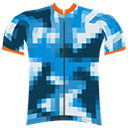
AACDigi Camo 2 KitLevel 11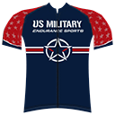
AGCUSMES KitGOUSMES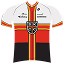
AMSSt Kilda Cycling Club KitSTKILDA2015KIT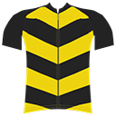
INFBasic 1 KitLevel 2 INTBasic 2 Kit
INTBasic 2 KitLevel 2 R SIGSCIS Training System Kit
R SIGSCIS Training System KitGOCIS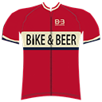
RABike and Beer KitBIKEANDBEER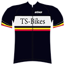
RACTS Bikes KitTSBIKES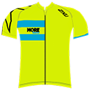
RAPTCMore Than Sports KitMTSKIT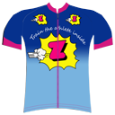
REVintage 3 KitLevel 8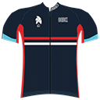
RCAMSydney Cycling Club KitSYDNEYCCKIT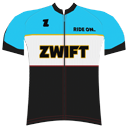
REMEBasic 3 KitLevel 2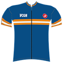
RLCVCGH Surrey Hills KitVCGKITSpeak to your Corps representative or use the Army Cycling eRacing Defence Connect group for official information and supporting documents.